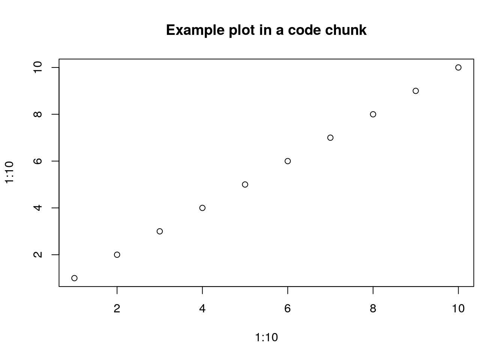
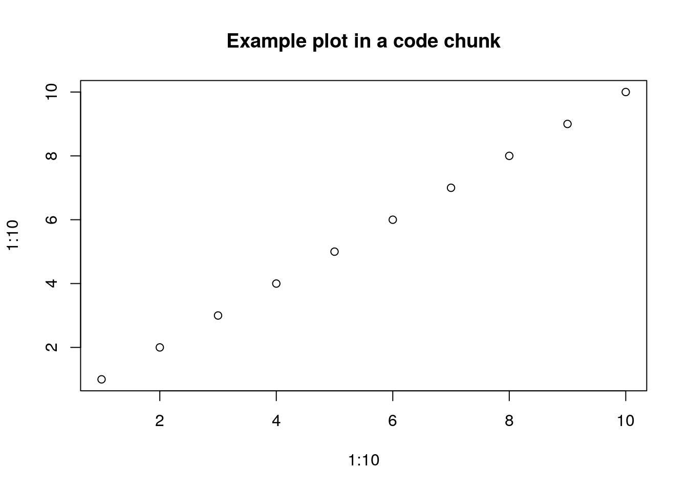
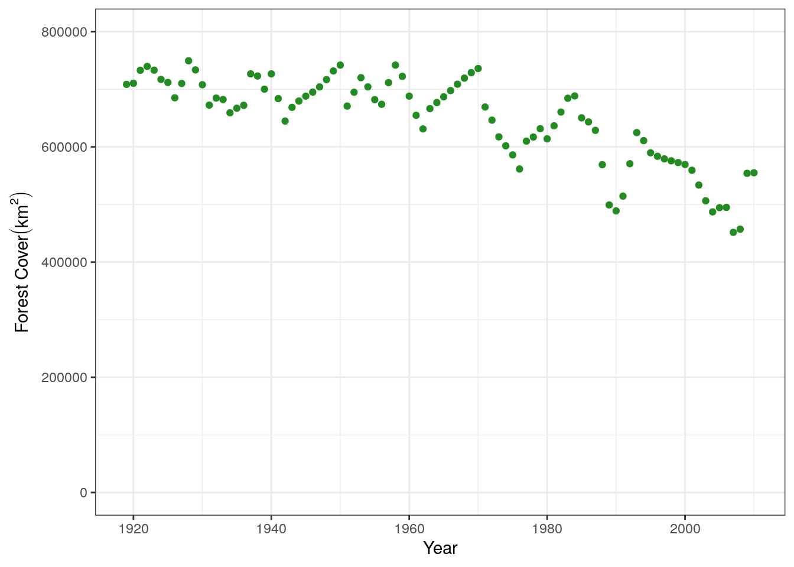
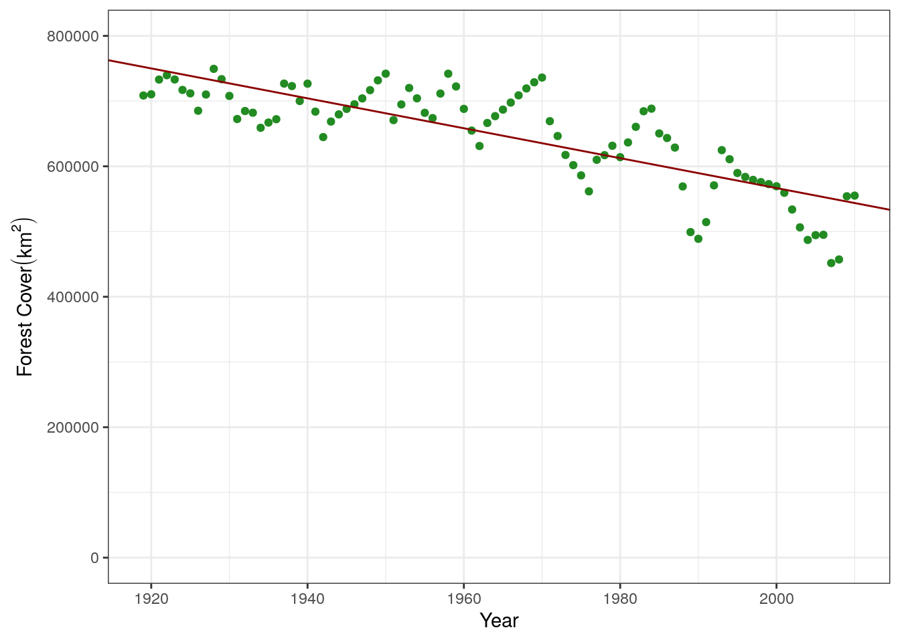
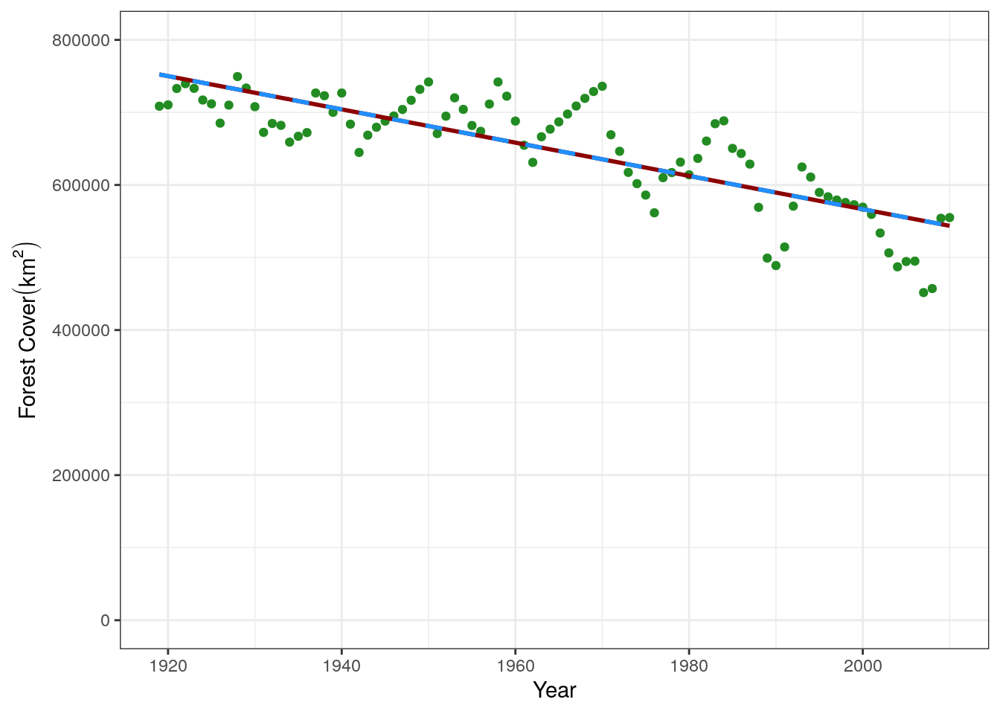
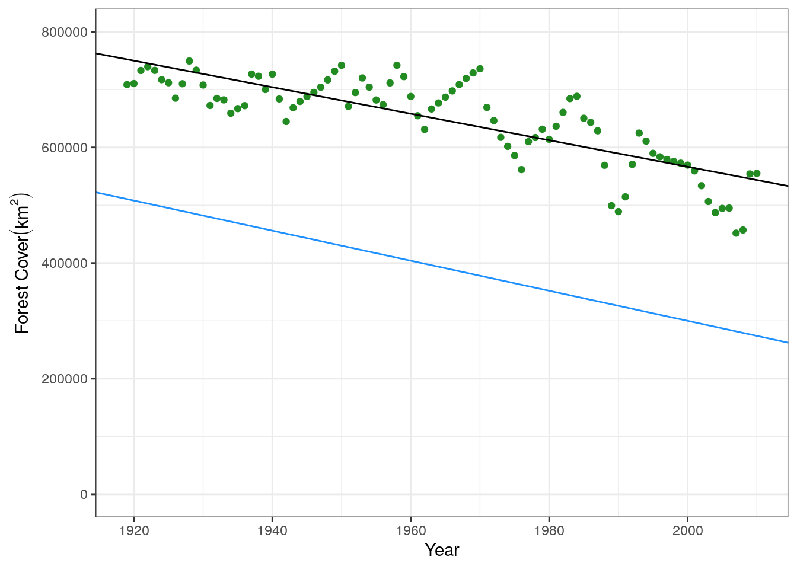
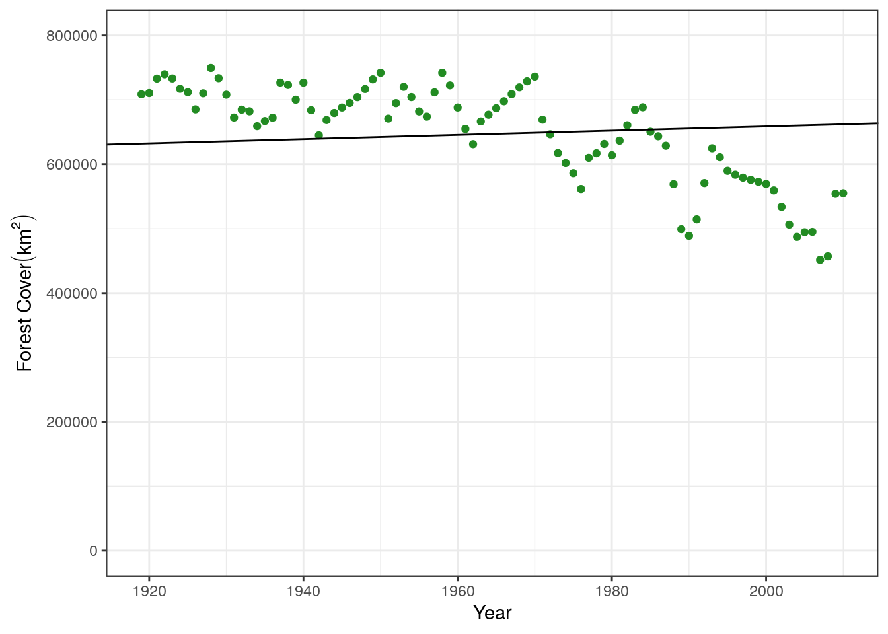
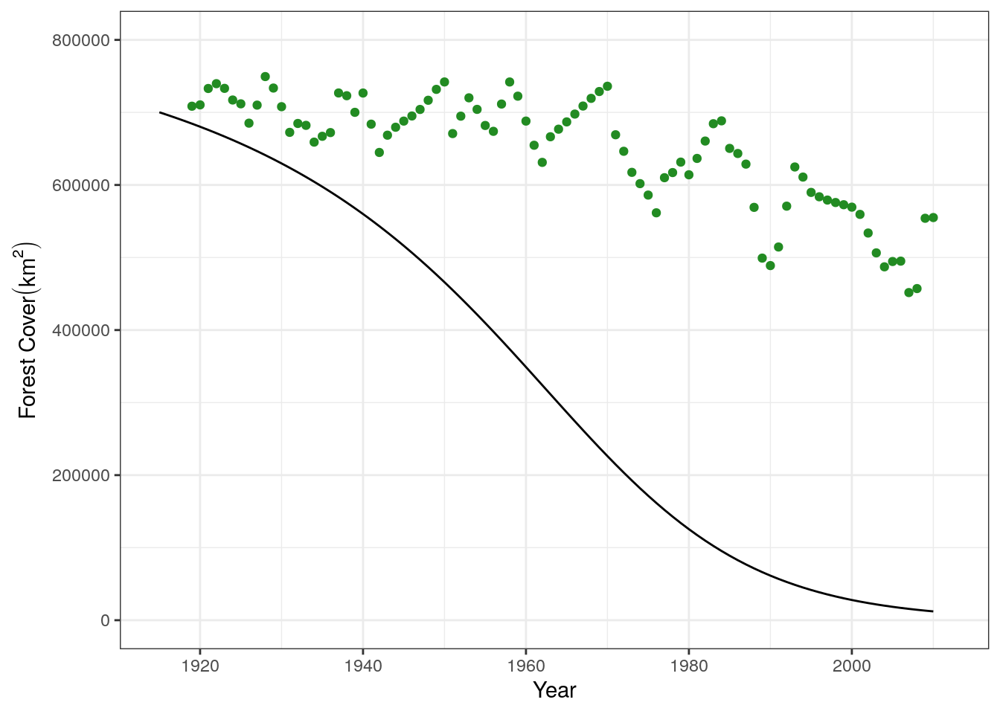
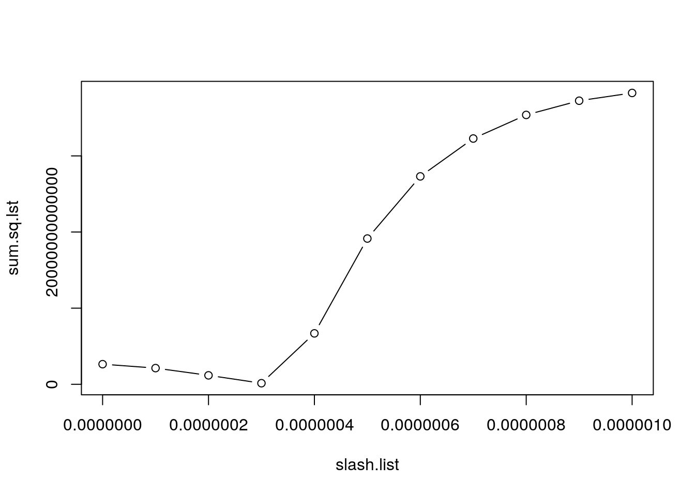
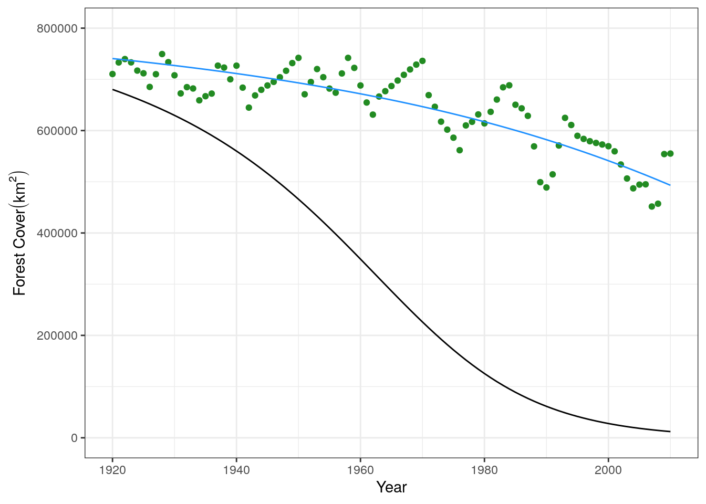

#this is an example code script
plot(1:10,1:10)
title("Example plot in a code chunk")
This is a Quarto document. It allows us to combine background text, code, and its output in one document. It can be “rendered” into an HTML file that can be read in any browser. All code chunks look like the following below, and can be run in RStudio just like a line in a standard .R script:
#this is an example code script
plot(1:10,1:10)
title("Example plot in a code chunk")
A “code-only” version of this tutorial is available in the fire-model-fitting.R script.
This is a tutorial that was developed as part of the E2M2 workshop held in December 2022. It is based on code developed by Cara Brook, further developed by Michelle Evans. If you have any questions, please send an email to Michelle at mv.evans.phd@gmail.com.
This turorial introduces the concept of model fitting. We use the term “model fitting” broadly, referring to both statistical and mechanistic models. In this tutorial you will learn the least-squares technique to fit both types of models to simulated data of forest coverage in Madagascar.
By the end of the tutorial, you should be able to:
Here are the packages we’ll need for this tutorial. I also choose to set some base configurations that I like, such as never reading in strings as factors, setting a limit for the number of digits to include when printing to the console, and setting a base theme for ggplot.
options(stringsAsFactors = F, scipen = 999, digits = 4)
#plotting
library(ggplot2); theme_set(theme_bw())
#ordinary differential equations
library(deSolve)
#data manipulation
library(tidyr)
library(dplyr)First, we load the data and inspect the dataframe’s structure:
treedata <- read.csv("treedata.csv")
head(treedata) yr forest
1 1919 708559
2 1920 710419
3 1921 733004
4 1922 739633
5 1923 733177
6 1924 717115str(treedata)'data.frame': 92 obs. of 2 variables:
$ yr : int 1919 1920 1921 1922 1923 1924 1925 1926 1927 1928 ...
$ forest: num 708559 710419 733004 739633 733177 ...It has two columns:
yr: the year of the measurementforest: the amount of forest coverage in Madagascar in sq. km (remember this is simulated)We can then plot the data, looking at the amount of forest cover over time. Note that we save this plot so we can easily add regression lines to it later in the tutorial.
base.plot <- ggplot(treedata, aes(x = yr, y = forest)) +
geom_point(color = "forestgreen") +
ylim(c(0,8e5)) +
xlab("Year") +
ylab(bquote('Forest Cover'(km^2)))
base.plot
First, we will fit a statistical model. We are interested in fitting forest cover as a function of the year, to look at the change overtime:
\[forest = m * year + b\]
glmThis is a linear regression, that we can fit using R’s built-in functions.
mod.stat <- glm(formula = forest ~ yr,
family = gaussian,
data = treedata)
#investigate parameters estimated by model
summary(mod.stat)
Call:
glm(formula = forest ~ yr, family = gaussian, data = treedata)
Deviance Residuals:
Min 1Q Median 3Q Max
-100668 -27121 3331 29925 100682
Coefficients:
Estimate Std. Error t value Pr(>|t|)
(Intercept) 5152516 343511 15.0 <0.0000000000000002 ***
yr -2293 175 -13.1 <0.0000000000000002 ***
---
Signif. codes: 0 '***' 0.001 '**' 0.01 '*' 0.05 '.' 0.1 ' ' 1
(Dispersion parameter for gaussian family taken to be 1983480599)
Null deviance: 519643631025 on 91 degrees of freedom
Residual deviance: 178513253944 on 90 degrees of freedom
AIC: 2235
Number of Fisher Scoring iterations: 2We can see that it returns two estimates that we are interest in. That for the Intercept (b in the equation above) and for the coefficient of year (slope, m in the equation above). Let’s add this fit line to the graph. The parameters can be access via mod.stat$coefficients:
mod.stat$coefficients(Intercept) yr
5152515 -2293 base.plot +
geom_abline(slope = mod.stat$coefficients[2], intercept = mod.stat$coefficients[1], color = "darkred")
We can also manually create this fit line through two methods. There is a function in base R called predict, that will predict values using the original dataframe used in the model:
base.predict <- data.frame(yr = treedata$yr,
prediction = predict(mod.stat))
head(base.predict) yr prediction
1 1919 752343
2 1920 750050
3 1921 747757
4 1922 745464
5 1923 743171
6 1924 740878We can write our own function that creates a new line based on estimated m (slope) and b (intercept):
mxb_line <- function(m, x, b){
y = m*x + b
return(y)
}
#example of predicting with this
my.predict <- data.frame(yr = treedata$yr,
prediction = mxb_line(m = mod.stat$coefficients[2],
x = treedata$yr,
b = mod.stat$coefficients[1]))
head(my.predict) yr prediction
1 1919 752343
2 1920 750050
3 1921 747757
4 1922 745464
5 1923 743171
6 1924 740878We can add that to the plot to see how they compare:
base.plot +
geom_line(data = base.predict, aes(y = prediction), color = "darkred", size = 1) +
geom_line(data = my.predict, aes(y = prediction), color = "dodgerblue", linetype = "dashed",
size = 1)
There are two parts to manually fitting a model, corresponding to two functions. The first function takes the parameters for m and b, predicts y-values based on these parameters, and calculates the sum of squares wit the true data. The second function wraps around the first function to minimize the sum of squares, resulting in the optimum estimate for the parameters.
The first function to calculate a sum of squares for one set of parameters. We’ve added some roxygen2 code above the function to help remind us what each of the arguments does. You can read it similar to how you would read a help file for a function.
#' Manually Estimate Least Squares
#' @param par vector of parameter values (m and b)
#' @param xval vector of x-values in the equation (in our case year)
#' @param ytrue vector of true y-values in our dataset
#'
#' @return Sum of Squares for given parameter values
lst_sq <- function(par, xval, ytrue){
m.guess <- par["m"]
b.guess <- par["b"]
##run your model with your guess parameters
y.pred <- mxb_line(m = m.guess, x = xval, b = b.guess)
##compare with data via sum of squares.
sum.sq <- sum((y.pred - ytrue)^2)
return(sum.sq)
}As an example, let’s use this function to estimate the sum of squares for our “optimal” parameter estimates above to some that we have moved away from the optimum.
#optimal parameters from linear regression
lst_sq(par = c("m" = -2293, "b" = 5152515), xval = treedata$yr, ytrue = treedata$forest)[1] 178514122204#estimate SS with parameters lightly moved from optimum
lst_sq(par = c("m" = -2600, "b" = 5500000), xval = treedata$yr, ytrue = treedata$forest)[1] 6200461146534We can see that the parameters we’ve moved away have a higher sum of squares and therefore are a worse fit. We can also double-check this visually by plotting both of the lines. The displaced line is in blue, and you can see it is a worse fit to the data.
base.plot +
geom_abline(intercept = 5152515, slope = -2293) +
geom_abline(intercept = 5500000, slope = -2600, color = "dodgerblue")
The second function is a wrapper that works to minimize the output (i.e. the sum of squares) from the previous function. By minimizing the output, we will find the optimum fit. This is done using the optim function in R, which searches the parameter space to find the values that result in the minimum sum of squares.
wrap_fit = function(guess.slope, guess.int, xguess, ydata){
par <- c("m" = guess.slope, "b" = guess.int)
out <- optim(par=par, fn = lst_sq, xval = xguess, ytrue = ydata)
m.fit = out$par['m']
b.fit = out$par['b']
return(list(m.fit, b.fit))
}The two “guesses” that we give to this function are the initial starting values that the optim function will start the search at. It is always good to try and start these near where we think they might be, otherwise the model may not converge or will result in a poor fit. For example, let’s try with some nonsense values and see what happens:
poor.fit <- wrap_fit(guess.slope = 10, guess.int = 100,
xguess = treedata$yr, ydata = treedata$forest)
poor.fit[[1]]
m
329.3
[[2]]
b
168.9 base.plot +
geom_abline(slope = poor.fit[[1]], intercept = poor.fit[[2]])
This is clearly not a great fit to the data. Let’s make a better starting guess, taking for example the intercept of our data on the y-axis (800000) and the average decrease over this time period, about 5000 per year:
good.fit <- wrap_fit(guess.slope = -5000, guess.int = 800000,
xguess = treedata$yr, ydata = treedata$forest)
good.fit[[1]]
m
-2315
[[2]]
b
5195033 #predict from this model
good.predictions <- mxb_line(m = good.fit[[1]], x = treedata$yr, b = good.fit[[2]])
#plot this data
base.plot +
geom_line(aes(x = treedata$yr, y = good.predictions))This is a much better fit, and agrees with what we saw in the statistical model above. We can compare all the linear regressions we have done in a plot
base.plot +
#original statistical model with glm
geom_line(aes(x = treedata$yr, y = predict(mod.stat)), color = "darkred") +
#model fit using optim
geom_line(aes(x = treedata$yr, y = good.predictions), color = "blue",
linetype = "dotted", size = 1)From this we can see that forest is declining, because the slope is negative, and also estimate he amount of forest cover at the beginning of our time series using any of our predict functions. Remember that the intercept returned by the model isn’t the intercept at the beginning of our data in 1920, but would correspond to the amount of forest cover when x = 0 (which isn’t very useful to us), so you need to predict it using the value of the year.
This is all great, but we don’t know anything about why or how this decline took place. For this we need to use a mechanistic model.
Mechanistic models allow us to directly model the process that may be creating the data that we have. For example, we may hypothesize that the declining forest is due to slash and burn agriculture. We decide to build a model describing conversion of forest to savanna via slash and burn. Instead of m and b, the slope and intercept of a line, we now want to estimate the rate of slash and burn. We can describe this process with the following equations, describing changes in forest (F) and savanna (S):
\[ \frac{dF}{dt} = rF\frac{K-N}{K} - \gamma F S \] \[ \frac{dS}{dt} = \gamma F S \frac{K-N}{K}\]
The model has four parameters:
We already know the rate of forest growth (r = 1.01) and the carrying capacity (K = 900000). We will build a continuous model to estimate the rate of slash and burn that explains our data.
We define the model as a function that can be read by the ODE solver:
ForestSavannaCont <- function(t,y,parms){
# The with() function gives access to the named values of parms within the
# local environment created by the function
with(c(as.list(y),parms),{
N = For + Sav
dFordt <- r*((K-N)/K)*For - gamma*For*Sav
dSavdt <- gamma*((K-N)/K)*For*Sav
#Return forest to compare with data
list(c(dFordt, dSavdt))
})
}To then run the model, we need to provide the initial conditions (amount of forest and savanna), the time series we want to run it over, and values for the parameters:
## Intialize population
Mada.start <- c(For = 450000, #sq. km of forest in Mada
Sav = 100000) #sq. km of savanna in Mada
## Set up time-steps and units - here go for slightly longer to allow model to equilibrate
times <- seq(1900,2010,by=1)
## Define parameters
values <- c(r=1.01,
gamma = .00000045,
K = 900000) We can then run the model and plot it with the data:
slash.mod1<- data.frame(lsoda(y = Mada.start, times = times, func = ForestSavannaCont,
parms = values))
names(slash.mod1) = c("yr", "forest", "savanna")
base.plot +
geom_line(data = slash.mod1, aes(x = yr, y = forest)) +
xlim(c(1915, 2012))
It looks like the model is overestimating the forest conversion rate. Let’s adjust the rate by fitting the model to our dataset
Like the statistical model, we use a workflow consisting of several functions to fit a mechanistic model:
ForestSavannaCont)The comparison function takes a set of parameters, estimates the the forest cover for each year, and compares these predictions to the true data using the sum of least squares:
sum_sq_mech <- function(gamma, r, K, xstart, times, data){
parms <- c(r = r,
gamma = gamma,
K = K)
model.out <- data.frame(lsoda(y = xstart, times = times,
func = ForestSavannaCont, parms = parms))
names(model.out) <- c("yr", "forest", "savanna")
# the model runs for longer than our data, so we need to make sure
# we are comparing the same years across the two datasets
forest.preds <- model.out[match(data$yr, model.out$yr),]
## and compare the output of the model with the data
sum.sq <- sum((forest.preds$forest - data$forest)^2)
return(sum.sq)
}Let’s now test the function on one value of parameters:
sum_sq_mech(gamma = 0.00000045,
r = 1.01,
K = 900000,
xstart = Mada.start,
times = times,
data = treedata)[1] 13332008425590Now we write the wrapper function that minimizes the least squares to fit the optimum fit. It manually explores a range of values for the slashing rate and then chooses the one which results in the lowest sum of squares.
wrap_mech <- function(xstart, times, r, K, data){
## make a sequence of guesses for the rate
slash.list = seq(from = 0, to = .000001, by = .0000001)
## then, search for the minimum
sum.sq.lst = list()
for (i in 1:length(slash.list)){
sum.sq.lst[[i]] = sum_sq_mech(gamma=slash.list[i], xstart=xstart, r=r, K=K, times=times, data=data)
}
sum.sq.lst = c(unlist(sum.sq.lst))
plot(slash.list, sum.sq.lst, type="b")
##find the minimum
fit.slash = slash.list[sum.sq.lst==min(sum.sq.lst)]
return(fit.slash)
}Then we can fit the model.
fit.mech <- wrap_mech(xstart = Mada.start, times = times, r = 1.01, K = 900000, data = treedata)
It returns a plot of the estimated value of the sum of squares across the values of \(\gamma\) that we evaluted. We can see that \(3e10^-7\) is the best fit. This is also what the function returns!
fit.mech[1] 0.0000003With this estimated parameter, let’s fit the mechanistic model and compare it to the data:
param.fit <- c(r = 1.01, gamma = fit.mech, K = 900000)
mech.fit <- data.frame(lsoda(y = Mada.start, times = times, func = ForestSavannaCont,
parms = param.fit))
names(mech.fit) <- c("yr", "forest", "savanna")
base.plot +
geom_line(data = slash.mod1, aes(x = yr, y = forest)) +
geom_line(data = mech.fit, aes(x = yr, y = forest), color = "dodgerblue") +
xlim(c(1920, 2010))
We can see that our fit line in blue is a much better fit to the data than our original guess.